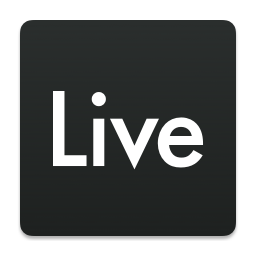

Pack your FX rack into 6 characters.
Share complete VST3 effect chains with a short code like K7Q2XA, or drag racks effortlessly between your DAWs.
Works across your DAWs
Import, share, and unpack third-party VST3 chains natively — even in Zero-Load mode without opening the plugins.

Ableton Live .adg / .advThree steps, zero rebuilds
PatchLink bridges web presets and desktop DAWs cleanly.
Website → PatchLink
Drag any preset card from this site into PatchLink, or paste its 6-character code.
PatchLink → Your DAW
Drag PatchLink's handle onto any mixer track to unpack native plugin slots automatically.
Share in 6 chars
Click Share in PatchLink or drop a DAW preset file on Publish to get a code.
Community presets
Drag any card into PatchLink, then drag from PatchLink into your DAW.
Download
Install PatchLink once, scan your VST3 folder under Library, and trade chains across DAWs.
Windows Installer
Includes both the VST3 plugin (C:\Program Files\Common Files\VST3\) and the Standalone converter.
PatchLink-Setup-1.6.0.exemacOS (VST3 + AU)
JUCE 8 CMake repository supporting VST3 and Audio Unit hosting for macOS and Windows.
View on GitHubCurrent official Windows release: v1.6.0 · Source & release notes on youpaki/PatchDrop.